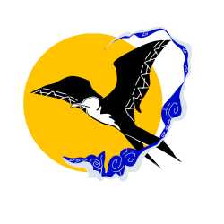
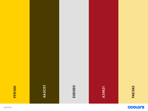

Site Name
Tarawa Chamber of Commerce
Purpose
To help and support the local bussinesses on Tarawa to prosper and reach their full potential as part of the Chamber of Commerce and Industry's Tarawa branch.
Domain
www.tarawacc.ki
Logo
Audience
The target audience is the local bussiness owners on the island of Tarawa, be they established bussinesses, startups, or community projects. We strive to help and support the bussiness owners to be able to reach the full potential of their craft and services.
Persona 1
Tekai Moote is 40 year old an aspiring bussinessman who has just recently opened up a shop in his village to support his family and provide a place to obtain neccessities for his community. He loves to talk with his neighbours and everybody enjoys his funny jokes when they come to shop. Being in a village that is quite isolated from the rest of the island, he tends to go about his village to see what items and goods are required for the village.
Scenarios
- What are the benefits that he can get out of this site? A few examples of the many benefits that we provide our members is a loan scheme for startup bussinesses and contact opportunities with wholesalers to be able to establish a good line of supply.
- What if he encounters problems during his run as a bussinessman? We provide our members a platform where they can relay their concerns as well as participate in discussions with other fellow bussiness owners and staffs.
Persona 2
Tateraka Taake, age 50, is the owner of a shop in the more rural part of Tarawa with his stores being placed by the roadside. Living on the shoreline has made him have a fondness for fishing so he would occasionally have some home-made tuna jerky on for sale. His younger brother often comes by to help him around shop in between his studies and they tend to have fishing trips when the shop is closed. Being the older brother he has to take care of his brother sometimes since they are from the outer islands which comes with the added benefit of a funny accent and not knowing what they are doing 90% of the time.
Scenarios
- Tateraka one day decides to employ a relative from the outer island, but he does not know how to train them for shop work. What can the chamber do to help? The chamber offers our members workshops on both employee management and also training for people who are looking to be employed within the scope of bussiness from storekeeper to accountant.
- One day, the people in his village kept on asking whether he has a specific product, and he really wanted to have that product but doesn't know how to get it. With the chamber's bussiness owner platform, you can communicate with other owners that have that product available and conduct either a collaboration or ask which wholesaler distributes the products or you can straight up contact our staff and we will get back to you with the wholesaler's info and their pricings for said product!
Styling
Color Palete
Jonquil, Drab Dark Brown, Platinu, Madder, Jasmine
I chose this theme because I saw it in a couple of places, and it looked cool and nice, I dub this type of palette as the Honeycomb Palette, with a few more lighter colors it looks friendly while with more darker colors it looks professional and futuristic. That one red is for some sort of accent I would use latter.
Fonts and Typography
Roboto & Montserrat
I chose these two fonts because they are pretty sleek and look nice, especially Montserrat, it just has this certain charm to it. The reason I chose a combination of these two is also because they are both from the sans-serif family, so the transition between them is not that jarring.